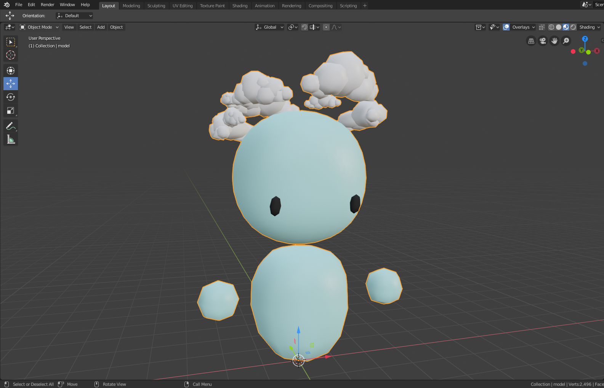
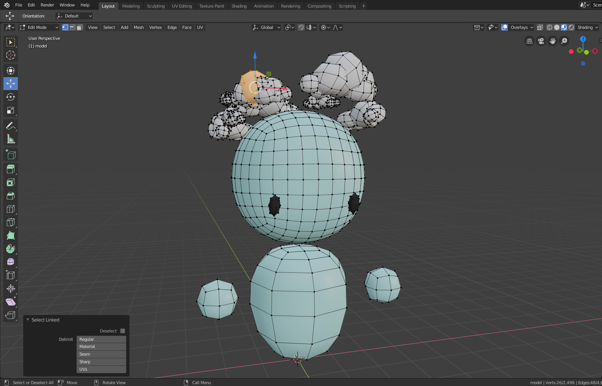

Seperating a joined mesh
with 'Select Linked'
Blender Quick Tip
Whenever a model or part of a model consists of multiple elements it
is commom to join (CTRL + J)
those elements together. This is
being done for three main reasons:
- Selecting multiple
elements, which will likely be moved/transformed together anyway,
faster.
- Improving performance in large scenes.
-
Being able to set a single origin for all elements, which makes
transformations more precise.
After joining the mesh you
obviously can't select the individual elements in Object Mode
anymore,
but what if you need to access a specific element again? Blenders
'Select Linked' function makes
this possible. Let's look at the
following game asset, which consists of multiple elements and has
been
joined into one mesh:

A joined mesh (as indicated by the orange line around it).
With the mesh still selected we switch into Object Mode (TAB). Using
the 'Select Linked' function from here
is actually really simple:
We just hover over the individual element, that we want to select, and
press 'L'.

As you can see it was possible to select the individual element.
Additionally a window popped up in the
bottom left corner in which you
can change the mode of the function, but for me the regular mode
(which
calculates the selection based on the geometry, specifically the
direction of the normals) has
worked in pretty much any case.